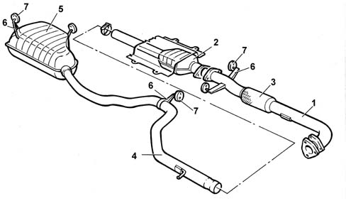

Composition
- Path
- Descriptions > 10 ENGINE > 1076 EXHAUST PIPES AND SILENCERS > Composition
- Kind
- system description
- Applies to
- engines: 2.4 JTD 10V; all production periods
- Interactive page
- https://sloeber94.github.io/elrnDB-lThss/en/#/612565
Applies to: engines: 2.4 JTD 10V; all production periods
STRUCTURE
The engine exhaust gases flow through the manifold to the turbocharger and then via a pipe (1) to the oxidizing catalytic converter (2) [DF 1080B].
There is a flexible element (3) in the front section of the exhaust pipe to restrict the transmission of vibrations.
The rear section of the exhaust comprises an intermediate pipe (4) and the rear silencer (5).
Special guards prevent heat radiating toward the body.
The various components are supported by means of supports (6) and flexible seals (7) fastened to the underbody.
